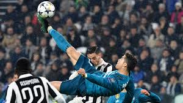

Futbol

El fútbol, como deporte moderno, tiene sus raíces en el Reino Unido a mediados del siglo XIX. A medida que las poblaciones urbanas crecían y se industrializaban, surgió la necesidad de actividades recreativas para los trabajadores. El fútbol se convirtió en una de esas actividades, con reglas estandarizadas que se desarrollaron gradualmente. En 1863, se establecieron las primeras reglas del fútbol moderno en la famosa reunión de la Freemason's Tavern en Londres, donde se fundó la Football Association (FA). Estas reglas se conocieron como las Reglas de Cambridge y sentaron las bases para el juego moderno.
El fútbol se extendió rápidamente por todo el mundo, principalmente debido al alcance del Imperio Británico. Se formaron asociaciones de fútbol en otros países, y pronto se organizaron competiciones nacionales e internacionales. En 1904, se fundó la FIFA (Federación Internacional de Fútbol Asociación), con el objetivo de supervisar y promover el fútbol a nivel mundial. A lo largo del siglo XX, el fútbol se convirtió en el deporte más popular del mundo. Se celebraron los primeros torneos internacionales, como la Copa Mundial de la FIFA, que se llevó a cabo por primera vez en Uruguay en 1930. Desde entonces, la Copa Mundial se ha convertido en uno de los eventos deportivos más vistos del mundo.
El fútbol también ha experimentado cambios significativos en términos de tecnología, tácticas y estilo de juego. La introducción de la televisión, la profesionalización del deporte y el aumento del interés comercial han transformado el fútbol en un fenómeno global, con ligas profesionales en casi todos los países del mundo.
En la actualidad, el fútbol sigue siendo un fenómeno cultural y deportivo de gran importancia. Millones de personas juegan y siguen el deporte, ya sea en estadios, en la televisión o a través de plataformas en línea. El fútbol ha trascendido las fronteras nacionales y continúa uniendo a personas de diferentes culturas y orígenes en torno a una pasión compartida por el juego.